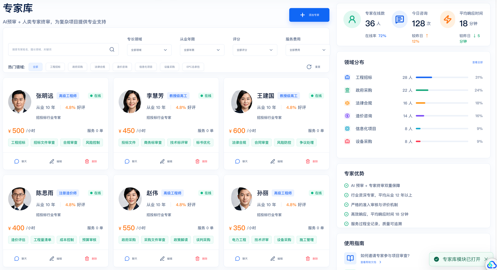

RESTORE
CASE / UI RESTORE
同一张 UI 图，普通还原和技能还原差在哪？
结论很直接：普通版更像重新设计，技能版更像按原型结构复原。
原型图
INPUT
先看原型图：专家库页面
核心模块：筛选区、专家卡片、右侧统计、领域分布、专家优势。
原型结构
NO SKILL
普通还原：页面完整，但结构被改写
顶部导航、咨询记录、字母头像、卡片数据，都开始偏离原型。
更像重做
SKILL
WITH SKILL
技能还原：先拆结构，再复原模块
保留真实头像、右侧模块顺序、专家卡片网格和原型视觉节奏。
更接近原型

SIDE BY SIDE
不是更漂亮，而是更像原图
普通版：重新设计感更强
技能版：结构更接近原型
COMPARISON
对比重点看这 4 项
页面骨架普通版偏移 / 技能版更接近
头像资产字母头像 / 真实头像
右侧模块重新组织 / 基本保留
文本数据都有误差，不能说像素级 1:1
CTA
想要完整教程和案例？
我已经整理了原型图、普通还原、技能还原、对比报告和 GitHub 示例。
评论「教程」
领取 image2-ui-code-restorer 使用流程和真实对比素材。
github.com/7tr75bcfv6-ops/image2-ui-code-restorer
普通方式可以做出页面；技能方式更适合做结构还原首版。NOT 1:1 CLAIM